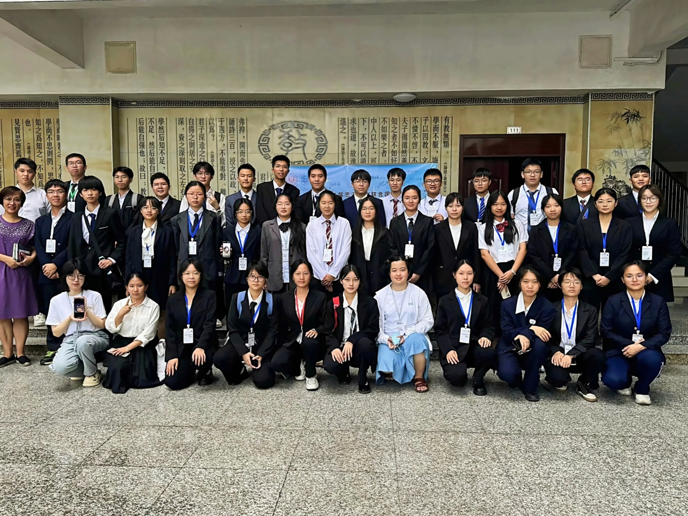
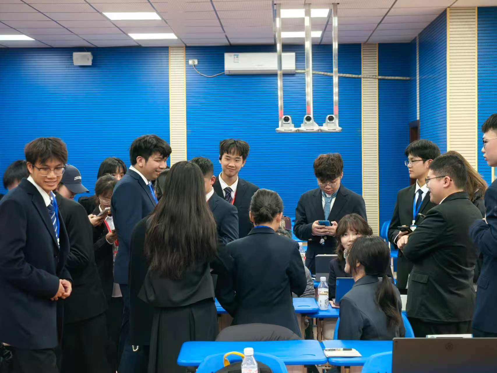
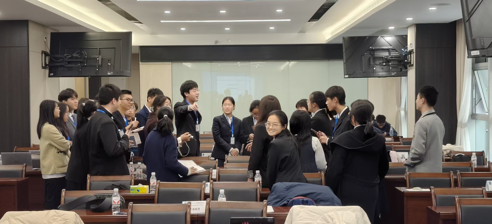
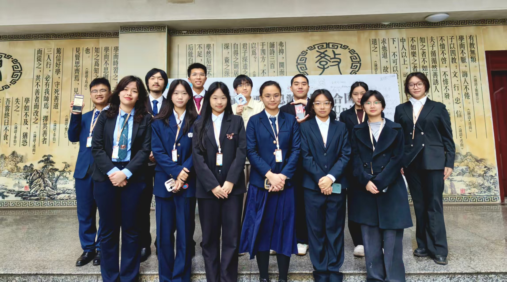
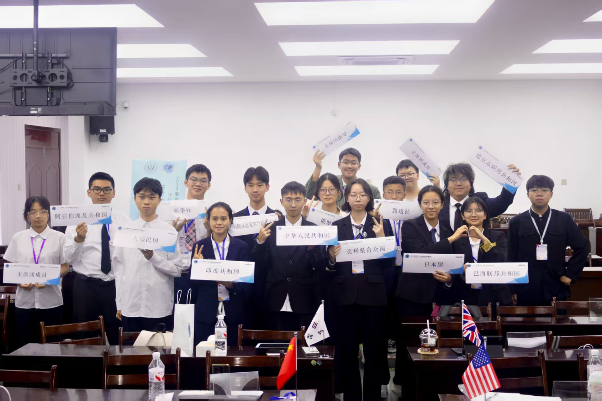
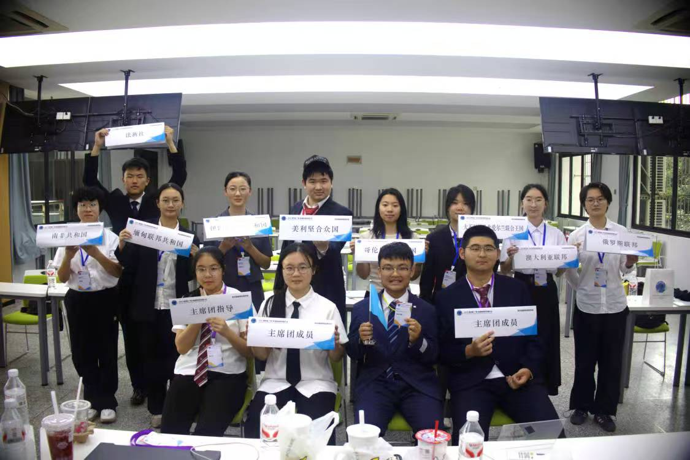
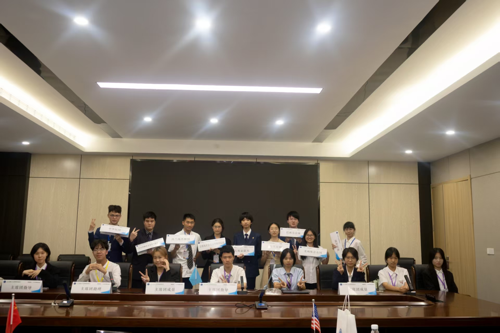
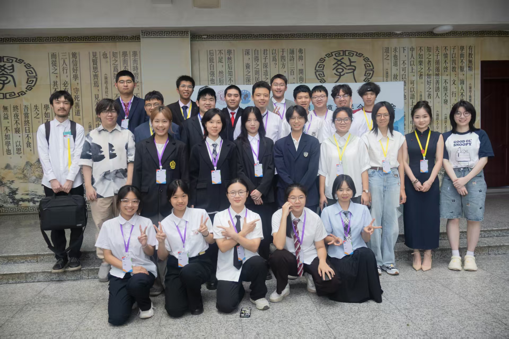
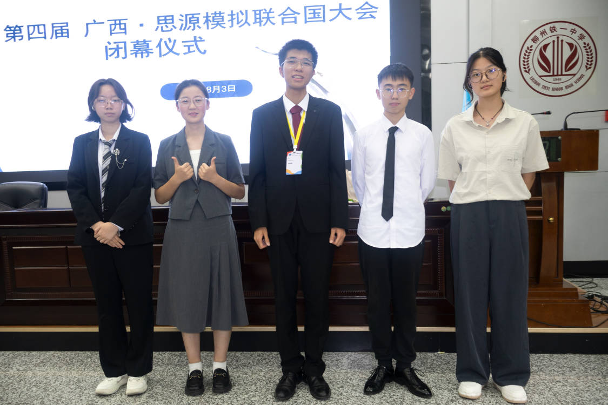
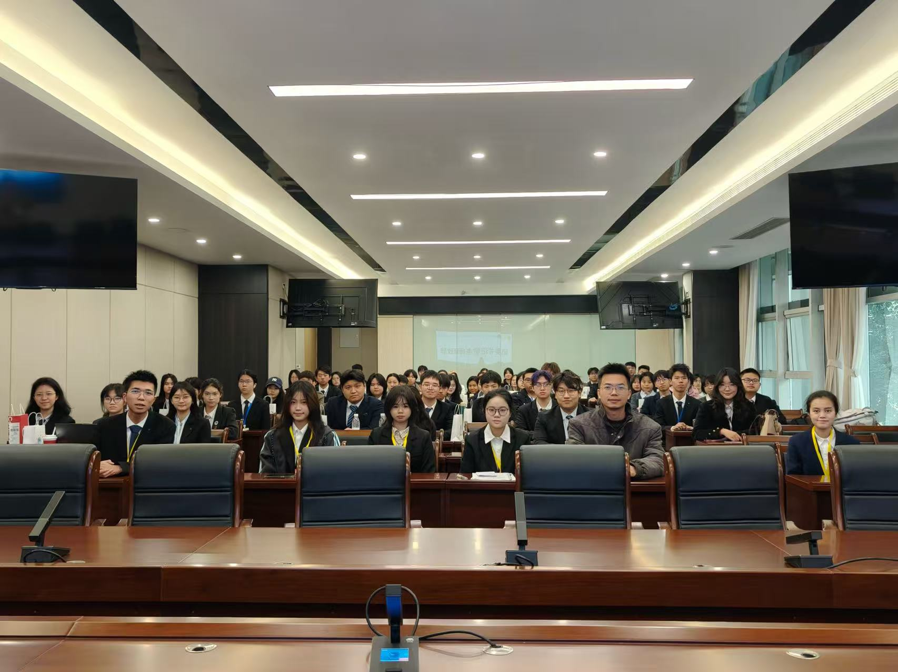

关于我们
广西·思源模拟联合国大会（GXSYMUN），是由现已毕业的柳州铁一中学模拟联合国社团优秀成员创立，并由共青团柳州铁一中学委员会指导的模拟联合国会议平台。
我们秉持“学术本位”的核心理念，致力于将顶级大会的学术理念带回广西，为八桂学子搭建家门口的优质会议平台。在办会之余，我们还主持了《火种计划》，思源追求学术的步伐永不停歇。
“志之所趋，无远弗届，穷山距海，不能限也”。在百年未有之大变局加速演进的当下，世界更加呼唤具有完备政治素质和全球视野的现代公民。而我国作为多边主义的笃定践行者、人类命运共同体的积极构建者和联合国权威的坚定维护者，亦更加需要兼具时代感知、全球视野与家国情怀的社会主义新时代青年。
“千磨万击还坚劲，任尔东西南北风。”在这个不确定性日益弥漫的时代里，我们更需要回归理性与人本的精神，重新发现和发掘人与人的联结，构建由青年之声筑基的思辨学宫。广西·思源模联在此承诺：我们将继续致力于为各位提供这样的平台。
历届会议回顾
点击会议名称查看会议亮点与历史坐标，点击具体会场了解详细信息。
2024第一届思源模拟联合国大会
委员会：联合国大会第一委员会·裁军与国际安全
议题：巴以冲突背景下的国际安全形势
规则：罗伯特议事规则
委员会：主新闻中心 (MPC)
规则：特殊议事规则
 时任柳铁一中校长龙玫女士莅临开幕式并与参会人员合影留念
时任柳铁一中校长龙玫女士莅临开幕式并与参会人员合影留念
2024第二届思源模拟联合国大会
委员会：金砖国家峰会
议题：后疫情时代背景下发展中国家的合作
规则：修改后的罗伯特议事规则
委员会：主新闻中心 (MPC)
规则：特殊议事规则

第二届大合照2025 第三届 广西·思源模拟联合国大会
委员会：1787年费城制宪会议
议题：制定美利坚合众国宪法
规则：修改后的罗伯特议事规则
委员会：联合国经社理事会 (ECOSOC)
议题：改善萨赫勒地区治理状况
规则：罗伯特议事规则
委员会：主新闻中心 (MPC)
规则：特殊议事规则

中文常规会场剪影
1787费城制宪会议现场
第三届筹备人员合影2025 第四届 广西·思源模拟联合国大会
委员会：1945年旧金山国际组织会议
议题：制定《联合国宪章》
规则：修改后的罗伯特议事规则
委员会：联合国麻醉药品委员会 (CND)
议题：应对全球毒品走私与滥用问题
规则：罗伯特议事规则
委员会：联合国大会非正式会议 (GA Informal)
议题：安理会改革
规则：罗伯特议事规则
委员会：主新闻中心 (MPC)
规则：特殊议事规则

变化后的联大会场合影
第四届会议现场
旧金山会场合影
第四届筹备人员合影
秘书长与邵阳二中代表团合影留念2026 第五届 广西·思源模拟联合国大会
委员会：1955年万隆会议 (Bandung Conference)
议题：反对殖民主义，共筑亚非未来
规则：修改后的罗伯特议事规则
委员会：联合国经济及社会理事会 (ECOSOC)
议题：推动全球范围内的餐饮外送普及化
规则：罗伯特议事规则
委员会：联合国开发计划署执行局 (UNDP Executive Board)
议题：推动全球能源转型革命
规则：罗伯特议事规则
委员会：主新闻中心 (MPC)
规则：特殊议事规则

第五届开幕式大合影学术体系
坚持“学术本位”，严格把控各届各会场的会议设计
为每一位代表提供从基础议事规则（罗伯特议事规则）到文件写作再到危机应对的学术培训。
- ✅ 模拟联合国基础议事规则规则
- ✅ 立场文件与决议文件写作
- ✅ 《火种计划》学术资源
- ✅ 本地高中生主席团全流程培养计划
报名指南
- 关注官方通知 (公众号/社群)
- 填写在线报名表单
- 缴费成功后进入参会人员总群
联系我们
- 📱 公众号：SY 思源模联
- 💬 官方QQ：2624717701
- 💬 官方 QQ 社群：131055043
- 📧 邮箱：siyuanmolian@126.com
吴斯绮 (外联总监)
QQ: 3422795422 | WeChat: Wsq13132821735